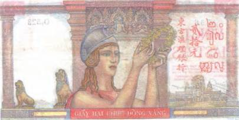
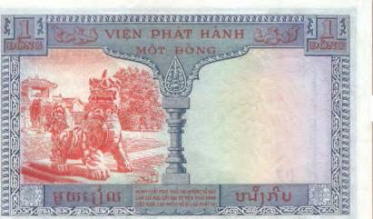
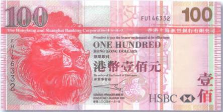
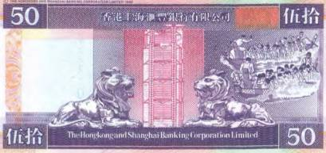
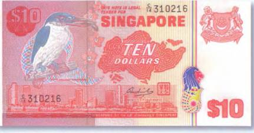
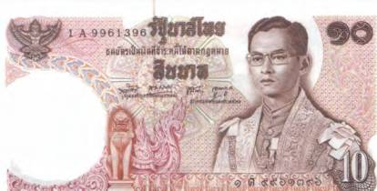
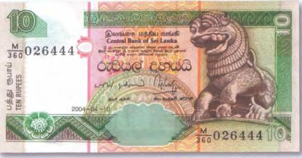
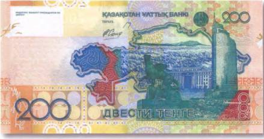
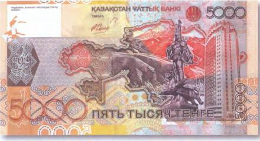

Тайны бумажных денег : Царственный зверь

В одном из своих воплощений бог Вишну являлся в образе человека-льва Нарасинхи, чтобы сразиться с демоном Хираньякашипу, посягнувшим на власть богов (рис. 204).
Возможно, что в подобных мифах и нужно искать истоки почитания льва как существа божественного. Этому царственному зверю поклонялись и в Китае, и в Индии, и на Цейлоне. Каменные изваяния львов сегодня, как и тысячу лет назад, охраняют входы в китайские дворцы и вьетнамские пагоды. Скульптура одного такого льва-охранителя размещена на рисунке с банкноты Французского Индокитая номиналом в 1 пиастр 1954 г. (рис. 205).


Обычно подобные фигуры из камня выглядят довольно жутко. С разинутой пастью и глазами навыкат. Иной раз они больше похожи на драконов, нежели на известных нам гривастых хищников. Но отпугивать они призваны не простых смертных, а вредных духов.

Занимательно, что традиция устанавливать такие вот изваяния у входов в здания не только дожила в своей исходной форме до наших дней, но вовсю практикуется и сегодня. Чтобы в этом убедиться, достаточно взглянуть на некоторые банкноты Гонконга. Например, на купюру в 100 долларов 2005 г. (рис. 206).

Там тоже запечатлен лев. Это один из двух каменных хищников, застывших у входа в здание банковской корпорации Гонконга и Шанхая. А изображение сразу обеих фигур да еще и целиком, встречается на бонах одной из прежней серий (рис. 207).
А вот герб островного государства Сингапур украшают сразу два хищника семейства кошачьих — лев и тигр. Впрочем, название страны Сингапур и переводится как «Город львов», в то время как тигр призван символизировать связь между двумя государствами-соседями — Сингапуром и Малайзией. Некоторые историки полагают, что своим названием Сингапур обязан южноиндийскому правителю XI в. Райендре. Хотя вот их оппоненты убеждены, что благодарить за это следует буддийских монахов, прибывших на остров в IV в., для которых лев всегда был священным зверем. Так это или нет, но лев и тигр мирно уживаются на бонах Сингапура, и истинное происхождение названия страны их едва ли интересует. На представленной здесь сингапурской боне 1976 г. номиналом в 10 долларов, помимо уже упомянутых гербовых хищников, можно лицезреть и еще одно загадочное существо (рис. 208).

Это Мерлайон — символ Сингапура — мифическое существо с головой льва и хвостом рыбы. Его восьмиметровая статуя из бетона, установленная в деловом центре города в середине XX в., соединяет в себе миф и действительную историю основания Сингапура.

Семья священных азиатских львов была бы неполной без их таиландского собрата — сингхи. Этот лев — один из популярнейших персонажей в тайской мифологии, он даже одолжил свое имя известнейшей в стране марке пива «SINGHA». Изображение таиландского сингхи можно рассмотреть на лицевой стороне 10-батовой боны 1978 г. (рис. 209).
От мистического льва Сингхи ведут свое происхождение и жители острова Шри-Ланка. Они считают его своим праотцом, от которого унаследовали отвагу и выносливость. Интересно, что на санскрите «сингха» обозначает «созвездие льва», а просто «лев» называется «сингх». Образ сингхи увековечен на актуальной банкноте Шри-Ланки номиналом в 10 рупий (рис. 210).
Очень интересное изображение крылатого хищника можно встретить на двух современных купюрах Казахстана. Это крылатый барс — один из новых символов молодого независимого государства. На 200 тенге 2006 г. запечатлен монумент этому крылатому зверю, который сегодня находится в Астане (рис. 211). А на 5000 тенге 2006 г. — скульптурная композиция, установленная в Алматы ко Дню независимости. При этом на плечах алматинского крылатого барса, выпрямившись во весь рост, стоит воин. Это «Золотой человек» — еще один символ Республики Казахстан. На правой руке у него сидит сокол, а на голове — высокий головной убор оригинальной формы (рис. 212). Нечто общее между тиарой римского папы и колпаком сказочного звездочета. Интересно, что ни с крылатым барсом, ни с «Золотым человеком» в Казахстане не связано ни одного сказания…


С этой проблемой столкнулись и создатели анимационного фильма «Легенда о крылатом барсе» (шымкенская студия «Жебе»). Выяснилось, что в казахском фольклоре легенды об этом удивительном животном отсутствуют. Тогда сценарист Батырхан Дауренбеков придумал такую легенду сам. Но как же быть? Откуда тогда взялись эти символы? Как могло получиться, что на штандарте президента республики, утвержденном им 29 декабря 1995 г., появился следующий рисунок: «Золотистый круг, в который вписана фигура юного вождя эпохи саков с поднятой правой рукой, восседающего на крылатом барсе. На руке всадника браслет, на шее гривна и амулет, на голове остроконечная шапка. Изображения всадника и барса цвета золота. Под барсом расположено изображение снежных вершин гор»? Ответ на все эти вопросы, как это ни странно, кроется в самом описании президентского штандарта!

В 1969–1970 гг. в Исыкском кургане в 50 км от Алматы была сделана сенсационная археологическая находка. Там оказался захоронен знатный сакский воин V–IV вв. до н. э. По обычаю тех времен его похоронили в доспехах и с оружием. Однако сенсационным было то, что все находящееся на теле воина-тигрохауда, а также его оружие были из золота. Отсюда и название — «Золотой человек». На основании такого богатого убранства ученые сделали вывод, что погребенный был либо вождем, либо царем саков. Его высокий остроконечный головной убор, костюм и сапоги были отделаны более чем 200 украшениями с изображениями птиц и зверей. Но особого внимания заслуживала золотая бляха с изображением крылатого барса. При этом задней лапой барс касался стилизованного изображения горных вершин.
Изображение головного убора «Золотого человека» стало символом Национального банка Республики Казахстан. Его без особого труда можно рассмотреть на лицевой стороне всех новых казахстанских банкнот. Интересно и то, что в мире существуют еще три копии «Золотого человека», которые были изготовлены в 1997 г. казахстанским художником-реставратором К. Алтынбековым. Об их местонахождении можно узнать на сайте НБК. «Одна копия была подарена ООН, вторая находится в музее президента Республики Казахстан, третья создана специально для музея Национального банка».